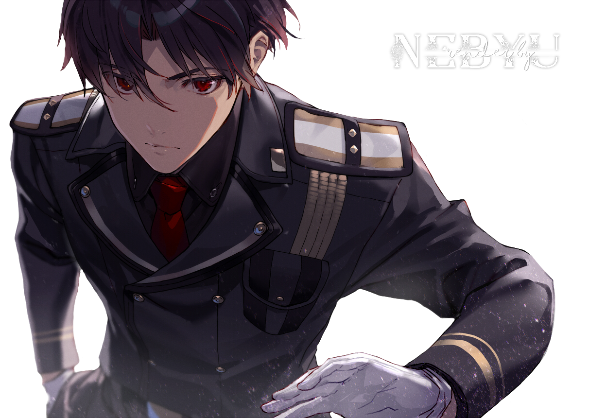
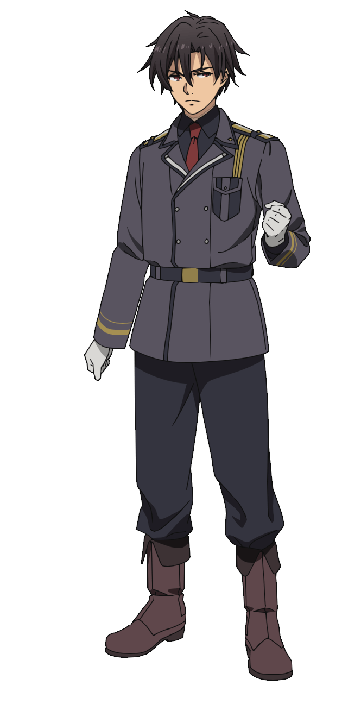

REQUIEM No. 86 — SUNG BY THE DEAD, CARRIED BY A BOY THEY TRUSTED
シンエイ・ノウゼン
SHINEI NOUZEN
“If, someday, we reach our final destination… would you leave some flowers there?”— THE ONLY REQUEST HE EVER MADE OF THE LIVING
MOVEMENT 01 · THE REPUBLIC OF SAN MAGNOLIA
A country that ended death
with paperwork.
Every evening, the Republic of San Magnolia reported its war dead: none. The war, it said, was fought entirely by unmanned machines — and machines cannot be mourned.
The lie was never a good one. It was simply official. Behind the wall, fifteen million citizens slept in peace because someone else's children were dying in barbed-wire wards they were not allowed to see as people.
Those children were the Eighty-Six — stamped with numbers, stripped of names, and issued four-legged aluminum coffins with a Republic manufacturing plate, a 57mm cannon, and a life expectancy measured in days. The state's genius was never hiding the bodies. Its genius was this: a country that never admits its people exist never has to explain their graves.
“You cannot mourn what you never registered — so register no one.”
— THE ARITHMETIC OF SAN MAGNOLIA
MOVEMENT 02 · PARA-RAID RESONANCE · THE SENSE
Every machine on the field
is screaming a name.
He answers all of them.
The Legion do not run on code. They run on human brains — harvested from soldiers, wired into steel, and marched back at their old friends.
So the Undertaker does not listen for engines. He closes his eyes and listens for voices: every crawling Ameise, every growling Löwe, carrying some seventeen-year-old still whispering I'm here — I'm still here — like a hand knocking on a door no one else can hear.
Shin hears every voice across three kilometers of screaming steel. He knows where each machine will move before it moves. And he knows exactly where to place the shell that lets its occupant finally sleep. The Republic logged his talent as a malfunction of an expendable unit. The dead logged it as their only open door.
Every contact on this field was a person once. Sweep the radar. Hear what Shin hears.
LEGION NEURAL ECHOES · DECODED BY UNDERTAKEROne voice never begs. It only says his name — patiently, time after time, from his own side of the war.
That voice belongs to his brother, and it has been waiting five years to be answered.
MOVEMENT 03 · THE FIRST VOICE · SHOUREI NOUZEN
The first voice he ever heard
tried to kill him.
Before the war took everything else from Shin, it took the one person who loved him loud enough to leave a mark.
The scarf was Rei's gift, from the years when their family still had warmth in it. Everything the scarf hides is Rei's as well: on the worst night of Shin's childhood, war had hollowed his brother so completely that Rei's hands wrapped around his little brother's throat and squeezed until the world went silent.
Shin survived. And out of that silence — from the far edge of death itself — something followed him back: a sense, a curse, a door left ajar. He can hear the dead. He has heard them, without one quiet night, ever since.
When Shourei finally fell, the Legion recovered the eldest son of House Nouzen intact. They wired what remained of him into a Shepherd — a command unit woven from a dead man's brain — and for five years, across every field of the Eastern Front, that thing walked ahead of his little brother, whispering through the static:
“Shin... Shin... I found you. I'll come and deliver your happiness.” — THE SAME WORDS, EVERY NIGHT, FOR FIVE YEARS
Every soldier who heard it told Shin to run from that voice. Shin did the opposite: he held formation — and waited, field after field, for the day the voice came close enough to be answered honestly.
The day came. The Undertaker put his barrel against the machine wearing his brother's remains like a borrowed coat — and performed the first burial of his life, with the last words of his childhood:
“You don't have to fight anymore, Rei. Go to sleep.” — ONE SHOT · ONE RELEASE · ONE BROTHER FREE
MOVEMENT 04 · THE UNDERTAKER'S WORK · 576 NAMES
Funerals at gunpoint
are still funerals.
When someone falls beside him, Shin has minutes before the Legion arrives — to harvest his friend's brain and march it back toward him as an enemy.
So the Undertaker performs three rites, in order, fast:
First — the mercy round, into the wreck, before the harvest can begin. Second — the shard: a small rectangle of aluminum cut from the machine that carried them. Third — the carving: two names, pressed into metal with a knife. The name they died with. The name they were born with.
Five hundred and seventy-six plates now rest in an old metal box he carries like a heartbeat. It is the only complete account of the Eighty-Sixth Sector's dead anywhere on earth — written by a boy, kept in a pocket, promised to flowers.
The Republic keeps no graves. So he became one, and he walks.
NAMES REMEMBERED — 0 / 576
Each name was real. Each one sang.
MOVEMENT 05 · THE SPECIAL RECONNAISSANCE MISSION
The order was a death sentence.
They read it as directions.
After six years and hundreds of battles, the Republic finally acknowledged its finest soldier — by handing him a mission that could not be survived, issued to the one squadron that could not be replaced.
Special reconnaissance: march east through Legion territory until all units are destroyed. Reinforcements — none. Return route — none. The state even billed them for their own coffins.
They read the paper twice, and for the first time in years, they smiled. It was an execution order — and also the first honest thing the Republic ever gave the Eighty-Six: an exit.
I · THE DEPARTURE
They saluted the wall that had caged them, left one final correction in the national record — casualties: all of the above — and walked into the only country where everyone is equal: the country of the dead.
II · THE CARRYING
Every improvised grave on the road east received its rites: the mercy round, the shard, the two carved names spoken aloud. The box grew heavier, and nobody once asked to carry it for him. They understood the weight was the point.
III · THE FALL OF THE WALL
Behind them, months later, the Legion broke through the Grand Mur and buried the Republic under the arithmetic it had always refused to count. The lie did not collapse. It was invoiced.
IV · THE SILENCE
And then one morning — impossibly — the screaming stopped. The Legion's chorus changed key. Ahead, past the last of the war, something was blooming.
MOVEMENT 06 · THE FINAL DESTINATION
The flowers kept
their side of the promise.
On a hill at the edge of the world, where nothing should ever have grown, a sea of red spider lilies ran to the horizon — planted, petal by petal, by every soul the Eighty-Six had ever lost along this road.
In all his years of speaking for the dead, he had made the living exactly one request: get to the destination, and bring flowers. No one had ever managed it.
So he laid the box down where the red grew thickest — five hundred seventy-six names, delivered home by hand — and stood a long while in the warming light: a sixteen-year-old undertaker with no more burials to perform, and an entire sunrise to spend.
He made it. They made it. Both things are true at once — that is the whole miracle.

“We're here. Every last one of us — to the final name.”
MOVE YOUR CURSOR — PETALS RISE FOR THE AWAKENED DEAD
THEY CALLED HIM THE REAPER, BECAUSE WHEREVER HE WALKED, THE DYING FINALLY GOT TO REST.
THE TRUTH IS HEAVIER:
HE WAS THE UNDERTAKER —
AND NOT ONE OF THE 576 EVER WENT HOME UNNAMED.
The dead do not speak.
SO THEIR UNDERTAKER SPEAKS — BY NAME, ALWAYS BY NAME.
He is alive. Not because the war spared him — because everyone he ever buried asked him to be.